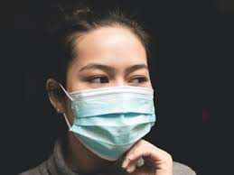

Be Safe,Be alert!
- Avoid close contact with people who are sick.
- Stay home when you are sick.
- Avoid touching your eyes, nose or mouth.
- Cover your nose and mouth with a tissue when coughing or sneezing and throw the tissue away after use. If a tissue isn’t available, cough or sneeze into your elbow or sleeve, not your hands.
- Wash your hands often with soap and water for at least 20 seconds, especially after going to the bathroom; before eating; and after blowing your nose, coughing or sneezing. If soap and water are not readily available, use an alcohol-based hand sanitizer with at least 60% alcohol. Always wash hands with soap and water if hands are visibly dirty.
- Practice other good health habits. Get plenty of sleep, be physically active, manage your stress, drink plenty of fluids and eat nutritious food.
- Disinfect doorknobs, switches, handles, computers, telephones, bedside tables, bathroom sinks, toilets, counters, toys and other surfaces that are commonly touched around the home or workplace.
Facemask Rules
- CDC does not recommend that people who are healthy wear a facemask to protect themselves from respiratory diseases, including COVID-19.
- Facemasks should be used by people who are ill to help prevent the spread of the disease to others.
- The use of facemasks is also crucial for health workers and people who are taking care of someone in close settings (at home or in a health care facility).
